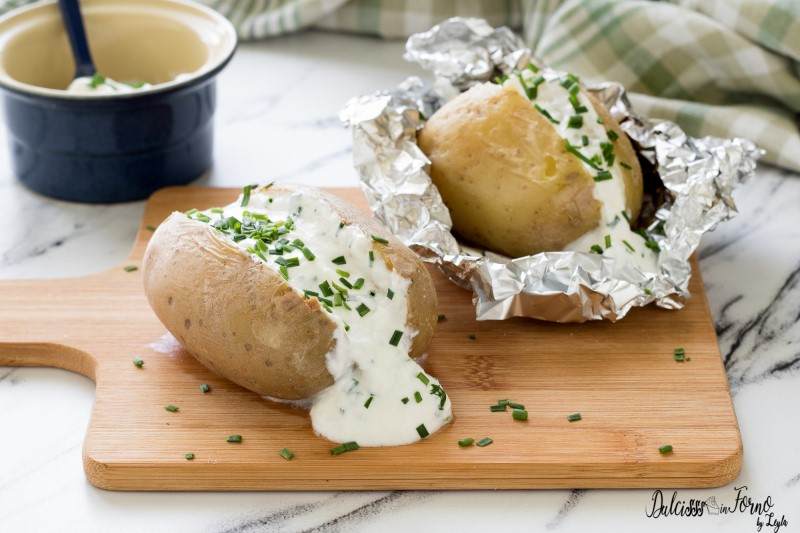

Patate al cartoccio

Ingredients
- 4 potatoes (about 180 grams each)
- sour cream 200 ml
- 3 tablespoons chives
- salt, as needed
- pepper, as needed
Steps
- Preheat the static oven to 200°C
- Wash the potatoes and dry them with a cloth
- Wrap each potato in a sheet of aluminum foil, leaving it rather soft, with the closure on top
- Bake the whole potatoes in the preheated static oven at 200°C for 50 minutes. If the potatoes are larger, continue cooking for an additional 5 minutes. Test the doneness by inserting a toothpick into the potato: if it is soft and goes in easily, they are ready
- Once cooked, open the foil and cut the potato in half, without going all the way through. Season the inside with salt and pepper
- You can serve the potatoes with sour cream, as shown in the photo, simply by mixing the sour cream with chopped chives and a pinch of salt and spooning the sauce into the hollow. Garnish with chives. You can also follow the recipe to make homemade sour cream
- Baked potatoes in foil can also be served in other ways. Buttered potatoes are always a good choice. In this case, just add a few small pieces of butter on top of the halved potatoes, which should be eaten by scooping out the flesh and leaving the skin in the foil. You can also add chopped spices and herbs (sage, rosemary, paprika, etc.).